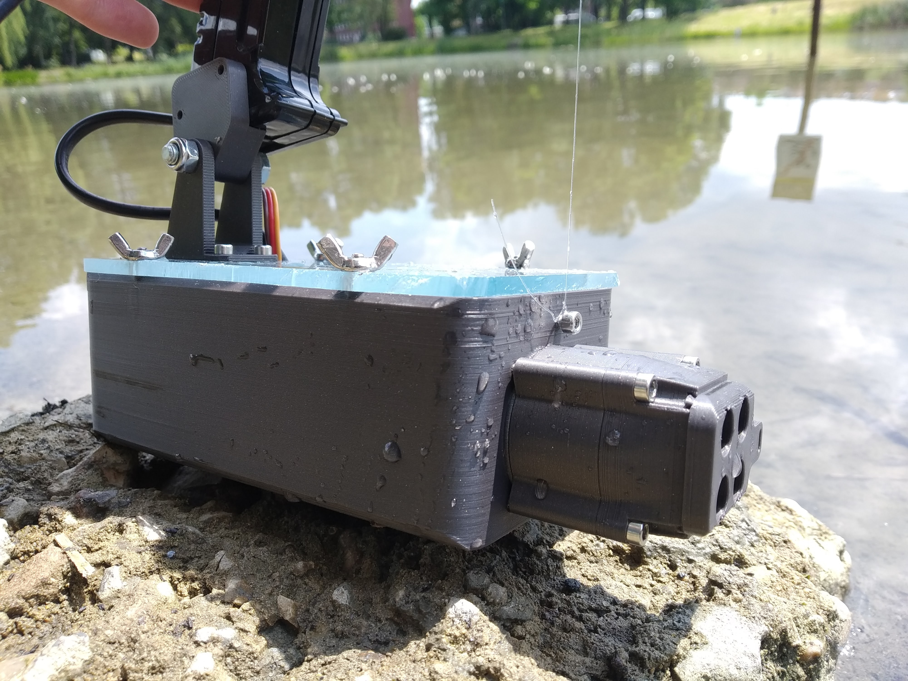

TWIN-JET
Motorówka RC napędzana turbinami strumieniowymi 
Ogólna idea
Ideą projektu było zaprojektowanie i zbudowanie łódki napędzanej zaprojektowanymi przeze mnie silnikami strumieniowymi (pump-jet). Zależało mi na tym, żeby motorówka była szybka, jak i zwrotna, pozwalając na precyzyjne manewrowanie we wszystkich kierunkach.
Inspiracje
Przede wszystkim, od dziecka chciałem mieć fajną, dużą łódkę. Nie wiem za bardzo czemu. Ale do zbudowania jej akurat teraz zainspirował mnie odcinek Smarter Every Day o RB-M'ach amerykańskiej straży przybrzeżnej. Tak mi się spodobał koncept ich manewrowalności, że stwierdziłem, że muszę mieć taką motorówkę. Jeśli chodzi o konstrukcję siliników, znalazłem projekt M-JET, który bardzo mi zaimponował i zachęcił do prototypowania własnego silnika. Nie będę ukrywał, że dość mocno wzorowałem swoją konstrukcję na tej właśnie turbinie.
Napęd
Perspektywa samodzielnego zaprojektowania i przetestowania silników strumieniowych była jedną z rzeczy, które skłoniły mnie do tego projektu. Konfiguracja na jaką się zdecydowałem to dwie turbiny wyposażone w wektorowanie ciągu i wiaderka zawracające. Taki układ w teorii pozwala na pełne 3 osie kontroli, czyli ruch łódki we wszystkich kierunkach.
Kadłub
Kadłób składa się z wydrukowanego z PLA rdzenia zalaminowanego włóknem szklanym.
Wymagania projektowe:
- Długość ~50cm
- Ciąg ~2kg na silnik
- 2 silniki strumieniowe
- self-priming silników
- 3 osie kontroli
Stanowisko testowe 02.2023
Jako, że planowałem przeprowadzić wiele testów silnika przed budową samej łódki, musiałem stworzyć stanowisko testowe, pozwalające na badanie jego wydajności. Konstrukcję oparłem na starym pilocie do autka, który zapewniał stabilny uchwyt i miejsce na trochę elektroniki. W jego wnętrzu znalazło się arduino zarządzające testami i miernik prądu i napięcia (ze starego APMa 2.8) Pod uchwytem została domontowana obudowa na silnik, a na górze, siłomierz. Za pomocą połączenia żyłką z obudową silnika, pozwalał on na pośredni pomiar ciągu.
Arduino przesyła prąd, napięcie, pwm i ciąg silnika po serialu na podłączonego laptopa, gdzie dane są rejestrowane w SerialPlot'cie.
Stanowisko testowe sprawdziło się podczas kilkudziesięciu testów, które na nim przeprowadziłem i nie sprawiało większych problemów. Na początku miałem problemy z przeciekaniem, woda przedostawała się wokół silnika, mimo uszczelnienia silikonem. Jednak jak przedrukowałem całą obudowę, żeby zmieściła 30mm turbinę, problemy ustały.
Rozwój silnika 02.2023
Proces projektowania turbin strumieniowych dla łódki oparłem na iteracyjnym prototypowaniu i testowaniu. Głównym powodem było to, że nie miałem wiedzy pozwalającej zaprojektować od zera optymalny silnik, jedyną moją szansą było stopniowe dojście do dobrego rozwiązania. Zaprojektowałem turbinę tak, żeby składała się z wielu części, które można wymieniać testując różne konfiguracje.
Żeby osiągnąć self-priming (napełnianie silnika wodą przy starcie, nawet gdy wylot jest nad jej powieszchnią) zdecydowałem się na dwustopniwą turbinę. Wzorując się także na projekcie M-JET, wykorzystałem poczwórną dyszę wraz kompaktowym sterem "płytkowym". Pozwoliło to zmniejszyć długość turbiny, kompensując jej dwustopniowość. Mimo że rozważałem i testowałem różne konfiguracje, najelpiej sprawdził się wirnik z oboma jedno-płatowymi stopniami. Jest to dosyć niekonwenconalny układ, jednaj z testów wynikło że "u mnie działa".
Prototypowanie zacząłem od wariantu turbiny o średnicy 25mm. Wykonałem około 20 testów z różnymi konfiguracjami wirnika, dyszy, statora i nie tylko. 25mm okazało się jednak za małe by spełnić moje wymagania projektowe, więc musiałem przeprojektować całość na 30mm średnicy. Jako, że po tej zmianie turbina była zbyt duża by testować ją w wannie przerzuciłem się na testy w jeziorku. Miało to ten minus, że w jeziorku są kamienie, które regularnie mi rozwalały wirniki.